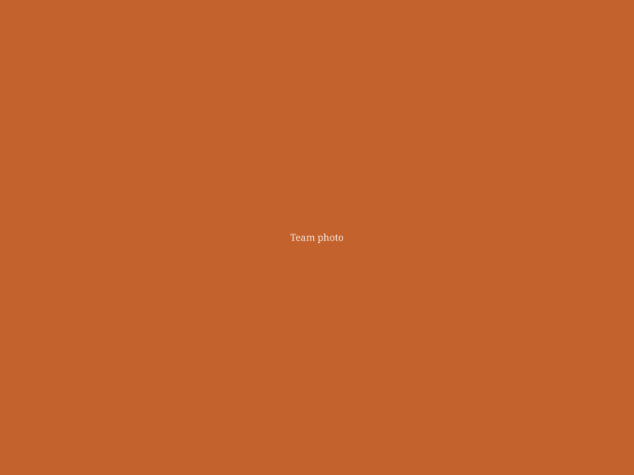

Eye care with a personal touch
We believe good vision is about more than clear sight — it's about how confidently you move through your day. That's the philosophy behind everything we do at our Hoedspruit practice.
Our story
Kyk Oogkundiges was built around a simple idea: professional eye care doesn't have to feel clinical. Our practice combines advanced diagnostic technology with a warm, personal approach — so whether you're in for a routine sight test or a specialised children's evaluation, you're treated like a neighbour, not a file number.
We're based in Hoedspruit Private Hospital, Medical Centre North, and proudly serve families across the wider Hoedspruit community in both English and Afrikaans.

What we value
Three things guide every appointment, every fitting, and every follow-up call.
Personal attention
We take the time to explain what we find and why it matters — no jargon, no rushing.
Advanced technology
From digital retinal imaging to infra-red eye tracking, we invest in tools that catch what a standard test can miss.
Community focus
As a local Hoedspruit practice, we're invested in the long-term eye health of the families we see year after year.
A bit of colour
Good vision should feel good, too — we bring warmth and creativity to a typically clinical experience.
Want to know the team behind the practice?
Meet the optometrists and practice assistants who'll be looking after your eyes.
Ready to see clearly?
Book a sight test for yourself or your child, or send us a message — we usually reply within a day.